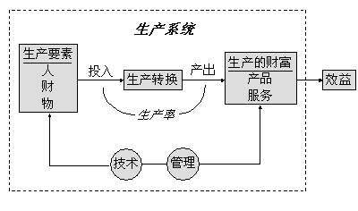

概述
现代工业社会离不开生产。一般认为，生产就是制造产品(有形物的生产)，但广义的生产还包括各种服务活动(即无形生产，诸如运输、销售、邮电、通信等)。人们只有通过各种类型的生产创造物质和精神财富，才能满足人类生存和发展的日益增长的需要，推动社会前进。所以，生产是人类最基本、最重要的一项活动。
无论哪种生产，都是把自然和社会资源(即生产要素，包括作为生产对象的材料、生产手段的机器和设施、为生产活动提供劳力的人员以及生产技术、信息等)转变成经济财富(产品和服务)，从而增加附加价值的过程。换言之，生产就是一种转换功能，所以，我们可以把它简化为生产要素投入转换过程(生产过程)而得到产出物的一个投入——产出系统，如图1-1所示。

图1-1 生产的含义
经济学上，用生产率(Productivity)来衡量生产系统的这种转换功能，表示生产要素的使用效率(生产率=产出／投入)。如果能用较少的资源投入得到更多的产出，则生产率提高了。也就是具有更高的经济效益，可获得更大的利润。因此，生产率成为生产活动中最为人们关心的一个指标。任何企业，事实上都以为社会提供产品和服务，不断追求更高的生产率和利润为目标。
显然，生产率的提高主要取决于生产过程中如何充分有效地发挥生产要素的作用，提高效率。人们为提高生产率所做的努力集中表现为改进生产技术和管理两个方面，不断发明新技术、新工艺，制造新工具、新机器和采用科学的管理方法。正如人们所说，技术和管理是生产和经济发展所依靠的两个轮子。实践证明，在工业化生产中，技术和管理只有很好地结合起来才能获得理想的效果。
工业工程(Industrial Engineering，简称IE)是本世纪初产生的一门技术与管理相结合的工程学科，是在人们致力于提高工作效率和生产率、降低成本的实践中产生的一门学科，就是把技术与管理有机地结合起来，去研究如何使生产要素组成生产力更高和更有效运行的系统，是实现提高生产率目标的工程学科。它既是一门实践性、实用性很强的工程技术，又是一门具有明显管理特征的现代管理技术。
科学发展与技术进步，导致了新的生产技术和科学管理原理及方法不断出现，为工业工程的发展和应用创造了条件。工业工程的应用极大地推动了生产发展和经济增长。工业发达国家人均国民生产总值远远高于许多发展中国家的原因除了历史和物质技术基础等方面外，工业发达国家重视发展和广泛应用工业工程这门提高生产率的技术也是一个重要的因素。因此，学习和应用工业工程，不仅直接有利于企业自身提高效益和利润，在激烈的市场竞争中求得生存和发展，而且也关系到加快国家经济发展、增强实力、缩小与世界先进水平差距的问题。